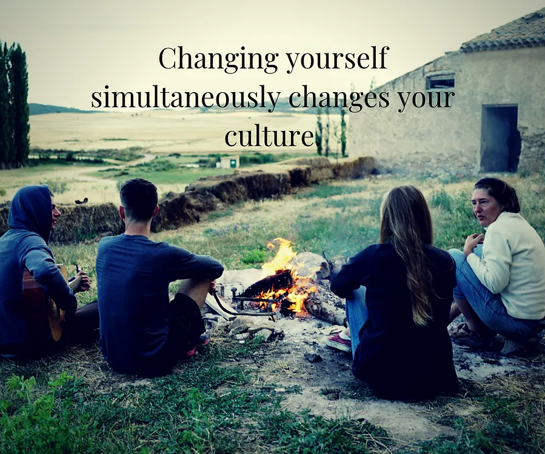

Possibility Management | Start Over Game
top of page
You have discovered the entrance to the bubble-map of the massively-multiplayer online-and-offline personal development thoughtware upgrade game called StartOver.xyz.
The most powerful way to change the status quo is to change yourself.
Right now you could change your mind about what you will do next...
No one can start over for you.
More interestingly...
No one can stop you from Starting Over.

Credit photo: Cori Chong
How gaming empowers you to make a better world
Over a million people have seen this YouTube video.
Watch it yourself to gain 1 Matrix Point.
An epic win for human beings on Earth is possible.
bottom of page